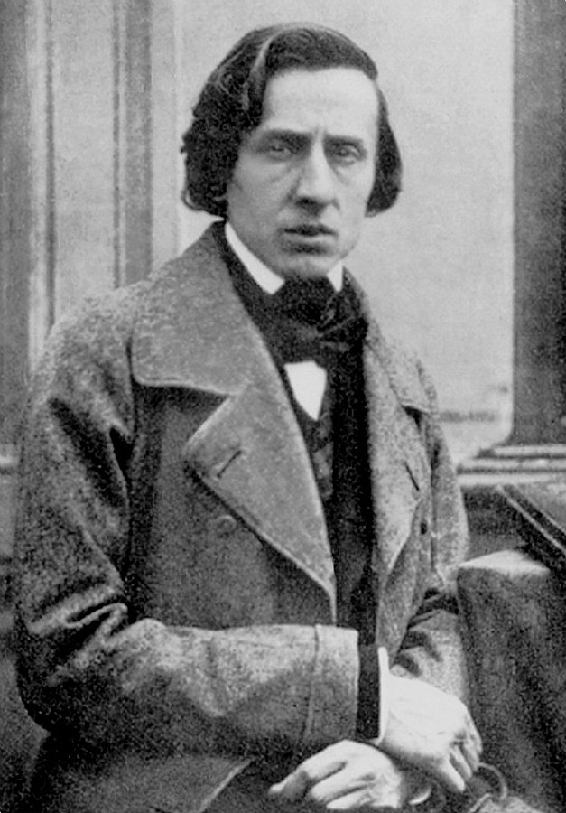
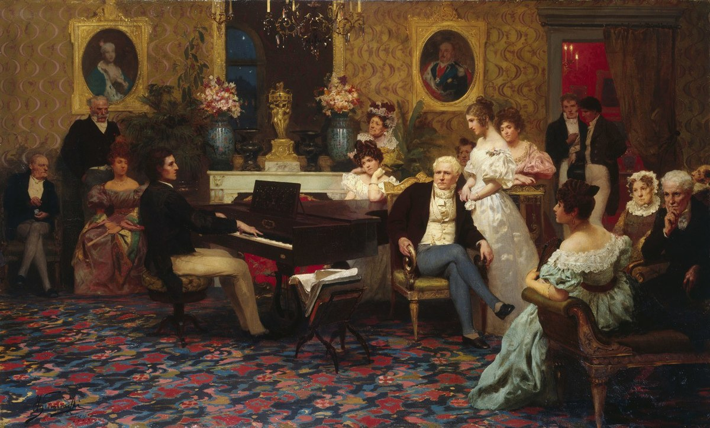

Frédéric François Chopin
SEC #1: Chopin's Life

Chopin’s father, Nicholas, a French émigré in Poland, was employed as a tutor to various aristocratic families,
including the Skarbeks, at Żelazowa Wola, one of whose poorer relations he married. When Frédéric was eight months old,
Nicholas became a French teacher at the Warsaw lyceum. Chopin himself attended the lyceum from 1823 to 1826.
All the family had artistic leanings, and even in infancy Chopin was always strangely moved when listening to his mother
or eldest sister playing the piano. By age six he was already trying to reproduce what he heard or to make up new tunes.
The following year he started piano lessons with the 61-year-old Wojciech Zywny, an all-around musician with an astute
sense of values. Zywny’s simple instruction in piano playing was soon left behind by his pupil, who discovered for
himself an original approach to the piano and was allowed to develop unhindered by academic rules and formal discipline.
Chopin found himself invited at an early age to play at private soirées, and at eight he made his first public
appearance at a charity concert. Three years later he performed in the presence of the Russian tsar Alexander I, who was
in Warsaw to open Parliament. Playing was not alone responsible for his growing reputation as a child prodigy. At seven
he wrote a Polonaise in G Minor, which was printed, and soon afterward a march of his appealed to the Russian grand duke
Constantine, who had it scored for his military band to play on parade. Other polonaises, mazurkas, variations,
ecossaises, and a rondo followed, with the result that, when he was 16, his family enrolled him at the newly formed
Warsaw Conservatory of Music. This school was directed by the Polish composer Joseph Elsner, with whom Chopin already
had been studying musical theory.
Health was a recurrent worry, and every summer Sand took him to Nohant for fresh air and relaxation. Close friends, such
as Pauline Viardot and the painter Eugène Delacroix, were often invited too. Chopin produced much of his most-searching
music at Nohant, not only miniatures but also extended works, such as the Fantaisie in F Minor (composed 1840–41), the
Barcarolle (1845–46), the Polonaise-Fantaisie (1845–46), the ballades in A-flat major (1840–41) and F minor (1842), and
the Sonata in B Minor (1844). Here, in the country, he found the peace and time to indulge an ingrained quest for
perfection. He seemed particularly anxious to develop his ideas into longer and more-complex arguments, and he even sent
to Paris for treatises by musicologists to strengthen his counterpoint. His harmonic vocabulary at this period also grew
much more daring, though never at the cost of sensuous beauty. He valued that quality throughout life as much as he
abhorred descriptive titles or any hint of an underlying “program.”
Family dissension arising from the marriage of Sand’s daughter, Solange, caused Chopin’s own relationship with Sand to
become strained, and he grew increasingly moody and petulant. Some have speculated that, aside from such personal
conflicts, his mercurial behaviour may have been attributable to a certain type of epilepsy. In any event, by 1848 the
rift between him and Sand was complete, and pride prevented either from effecting the reconciliation they both actually
desired. Thereafter Chopin seems to have given up his struggle with ill health.
Broken in spirit and depressed by the revolution that had broken out in Paris in February 1848, Chopin accepted an
invitation to visit England and Scotland. His reception in London was enthusiastic, and he struggled through an
exhausting round of lessons and appearances at fashionable parties. Chopin lacked the strength to sustain this
socializing, however, and he was also unable to compose. By now his health was deteriorating rapidly, and he made his
last public appearance on a concert platform at the Guildhall in London on November 16, 1848, when, in a final patriotic
gesture, he played for the benefit of Polish refugees. He returned to Paris, where he died the following year; his body,
without the heart, was buried at the cemetery of Père-Lachaise (his heart was interred at the Church of the Holy Cross
in Warsaw).
SEC #2: Chopin's Music Genre

All of Chopin's compositions include the piano. Most are for solo piano, though he also wrote two piano concertos, a few
chamber pieces, and some 19 songs set to Polish lyrics. His piano writing was technically demanding and expanded the
limits of the instrument, his own performances noted for their nuance and sensitivity. His major piano works also
include mazurkas, waltzes, nocturnes, polonaises, the instrumental ballade (which Chopin created as an instrumental
genre), études, impromptus, scherzos, preludes, and sonatas, some published only posthumously. Among the influences on
his style of composition were Polish folk music, the classical tradition of J. S. Bach, Mozart, and Schubert, and the
atmosphere of the Paris salons of which he was a frequent guest. His innovations in style, harmony, and musical form,
and his association of music with nationalism, were influential throughout and after the late Romantic period.
Chopin's music, his status as one of music's earliest celebrities, his indirect association with political insurrection,
his high-profile love-life, and his early death have made him a leading symbol of the Romantic era. His works remain
popular, and he has been the subject of numerous films and biographies of varying historical fidelity. Among his many
memorials is the Fryderyk Chopin Institute, which was created by the Parliament of Poland to research and promote his
life and works. It hosts the International Chopin Piano Competition, a prestigious competition devoted entirely to his
works.
SEC #3: Chopin's Affection
 The International Chopin Piano Competition (Polish: Międzynarodowy Konkurs Pianistyczny im. Fryderyka Chopina), which is
also known as Chopin Competition, is a piano competition held in Warsaw, Poland every five years since 1927. The setting
of this piano competition is devoted entirely to the works of a single composer: Frédéric François Chopin. The competition
serve as a way for the general public to remember the great composer Chopin. Musicians gain huge fames when they gain awards
in the competition. Fou Ts'ong, the first pianist from China that gains achieve international recognition, receive bronze award
in 1955's Chopin Competition.
The International Chopin Piano Competition (Polish: Międzynarodowy Konkurs Pianistyczny im. Fryderyka Chopina), which is
also known as Chopin Competition, is a piano competition held in Warsaw, Poland every five years since 1927. The setting
of this piano competition is devoted entirely to the works of a single composer: Frédéric François Chopin. The competition
serve as a way for the general public to remember the great composer Chopin. Musicians gain huge fames when they gain awards
in the competition. Fou Ts'ong, the first pianist from China that gains achieve international recognition, receive bronze award
in 1955's Chopin Competition.